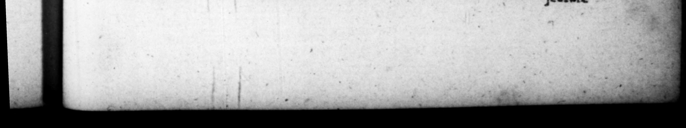

T. 5 LI DOM ret & ab > — SR REOie ne ettam publice. Nec el co 2 cum Vologeſus rex auxilia adverſue Alanoy, dgducemque altetum ex Veſpafiani_ liberis depopolc! omni ope contendit , ut ip fe potiſſimum mitteretur. Et quia diſcuſſa res ett, alios Orientis reges, ut i. em poſtularent denis ac polhcitationibus ſollicitare tentavit. Patre defuncto, diu cuncta an duplum donarivum millica donaret, dubitavit, relictum ſe 369. 2 fem Ih paris , fed froudem teſtamento adhibitam. Neque fratri clam. palamque : u correptiun gravi valetudine, brius quam plane efflaret animwam, pro mortuo deſeri Juſke ; deſunctumque nullo præterquam conſecrationis hoParchoram-” | fer himſelf. But that o:caſfen . — per, he attempt. 'ſents and 5 death ef his / ſome time 2. 0 the 2 e jactare vit ex eo iuſidias ſtruere 1 T8 3 . 255 Was „ Teen deſfiſed and 1 1 him, However when Vela? big the Parthians deſired 2 ow the Alani, and; _ Pe * 7 Jons, to command them i toured hard, to o procure — ho e omiſes . bags oth — the like requeſt. father, © to ma ther be ſhowld not offer domati ve double to * his b broto ſay quently, That he had been lest 2 partner in the empire, but that a trick had been plaid witli his father's will, And from that time forward be was continua 55 "1s Yar oo as df 2 private ＋ 5 9/1 be ee all 12 im under pretence erowſly. i 77 Ts 225 befare be Neal, 1s bet a ore was 4 and 2 his deceaſe paid — notediĩgnatus, ſæpeetiam carpſit to bis —_— 5 that obliquis oratiunibus, XY eclictis, enrolling K amongſt . — ; — which he Ves both in bis ſpeeches and proclamations * him by Ys ugly refleRions, 3. Inter inmtia principatus In the beginning of his reign, he quoridie ſecretum ſibi borari- - 77 — Jpend —— an _ by him um ſuiners ſolebat : nec quid- * ſelf in bick time he quam-amplins, quam muſcas was w Caprare, ac ſtilo præacuto configere, ut cuidam interroSanti, efſet we quis int cum Ceſare, non a ſurde rei; 2 ut a Vibio Criſpo, muſca quidem, Deinde uxorem ſuam Dumitiam, ex 2 in ſecundo ſuo Couſulatu ium tulerat, alteroque anno conſalutaverat ut Auguſtam, eandem Paridis hiſtrionis amore deperditam, repudixvit: intra qe breve tempus impatiens diffidii , quaſi efflagitante ulo, reduxit. Circa adminiftrationem autem Imperii A ſe vatium : miſtura ne in— vitiorum atque virtutum, donee vittutes quoque in viriade flexit : hp hearts con£911, under pretence of -cumphi th _ OT wp in ; whe catc þ he 7 e and flicking them _ body with a boakin. when ſomebody enquired ——_ = _ wy with the emperor, it was — h Brea byPibius Criſps — as a fly: Soon after his 2 his wife Domitia, by whom be had a ſn in bis ſecond. con. Suijſhip, and whom the year follo he cov, :Mlemented with 1 4 title 7 Aug uſt a, being deſperately in love wi ron aver Paris, he divorced ber, but in a ſburt time" after, * unable to bear the ſiparation, be tot ber 4 w the pcopl. 1mportunity in ber nr. There was in bi admmiftra im for time an odd-muxture of virtue and vice, till at laſt his irtues theme dag enerated into vice, being, at 4 body may reaſmably * n. jectare
